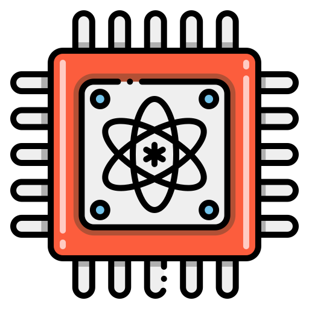

Quantum Computing Demystified

Imagine you're leafing through a massive encyclopedia, looking for a single, elusive fact. With traditional computing, it's like checking each page one-by-one. Quantum computing, however, would be akin to scanning the entire book instantaneously. This unimaginable power of quantum computing might sound like something out of a sci-fi novel, but it's closer to reality than most realize.
Understanding The Quantum Realm
At its core, quantum computing offers a different way of doing computations.
Classical Computing: Our computers, smartphones, and tablets use bits for processing information, which exist as either 0s or 1s.
Quantum Computing: Instead of bits, it uses qubits. A qubit can be both a 0 and a 1 at the same time due to superposition. Add to that the phenomenon of quantum entanglement, where qubits can be intertwined in such a way that the state of one qubit determines the state of another, no matter the distance between them.
Think of our current computers as extremely efficient librarians that read through each page of a book to find information. In contrast, a quantum computer would be like a magician who, in a split second, knows where every sentence is without flipping a single page.
Entanglement is another cornerstone of quantum mechanics. When qubits become entangled, they remain interconnected regardless of the distance between them. This profound connection allows quantum computers to process information in ways classical computers can't even fathom.

Quantum vs. Classical: A Paradigm Shift
The digital age has been defined by classical computing. For decades, classical computers have been our steadfast companions, driving technological advancements that have reshaped countless aspects of our lives. They operate on bits, which can exist in one of two states: 0 or 1. Every piece of information, every photo we take, every song we listen to, and every message we send can be broken down into a sequence of these bits. Their operations, no matter how complex, follow the set logic of Boolean algebra.
Quantum computing, however, introduces a radical departure from this binary system.
In the quantum world, instead of bits, we have qubits. These qubits are governed by the principle of superposition, which allows them to exist in both 0 and 1 states simultaneously. Imagine reading a book where each character can represent multiple meanings at the same time. The computational possibilities grow exponentially with each additional qubit, promising speeds and parallelism that classical computers can only dream of.
Another unique property of quantum mechanics is entanglement. When qubits become entangled, a change in the state of one qubit will instantly influence the state of another, regardless of the distance between them. This creates an interconnected web of qubits that can collaborate and coordinate in their processing tasks. In classical terms, it's as if every piece of data in a computer is intrinsically linked to every other piece, amplifying its computational prowess.
While classical computers are deterministic – given an input, they will always produce the same output – quantum computers are probabilistic. They deal with probabilities, allowing them to explore multiple solutions to a problem at the same time. Imagine trying to find the quickest route to a destination. A classical computer would examine each path one by one, but a quantum computer can explore multiple paths concurrently, identifying the optimal one much more rapidly.

The Quantum Dilemma
The potential of quantum computing stretches the boundaries of what we once deemed possible. Yet, the journey to fully harness this revolutionary technology is riddled with challenges that scientists and engineers globally are fervently addressing.
Central to the functioning of quantum computing is the qubit. Its quantum state, or coherence, is of utmost importance. However, the inherent sensitivity of qubits presents a significant challenge. Even minuscule disturbances, such as a stray electromagnetic wave or a slight fluctuation in temperature, can disrupt them. The external environment, filled with potential sources of interference, can lead to "decoherence," where qubits lose their distinct quantum state. Achieving prolonged stability in such a volatile environment is a herculean task.
In the quantum realm, errors are not the exception; they're almost the norm. Given the delicate nature of qubits, quantum computations are more error-prone compared to their classical counterparts. While error correction is a staple in classical computing, the complexity of quantum errors requires a new breed of correction mechanisms. Developing algorithms that can pinpoint and rectify these errors without exponentially increasing the required number of qubits is a monumental task.
As revolutionary as quantum computers promise to be, they aren't set to replace classical computers. Instead, they'll work in tandem, supplementing one another. This partnership necessitates seamless communication between quantum and classical systems. Converting quantum results into actionable classical data, and ensuring classical data can be effectively processed in a quantum environment, poses its own set of challenges. Efficient interfacing methods are thus crucial for practical applications.
Concluding Thoughts
Though still in its nascent stages, it's undeniable that quantum computing will redefine the technological landscape. As we stand at this precipice of innovation, one can't help but wonder about the transformative changes on the horizon.
Found This Thought Provoking?
I invite you to share your thoughts and perspectives with me on LinkedIn. Let's turn this monologue into a dialogue, exchanging insights and opinions to further enrich our understanding. Remember, every perspective brings us closer to the truth. Looking forward to our stimulating discussion. Connect with me today.
Understanding The Quantum Realm
At its core, quantum computing offers a different way of doing computations.
Classical Computing: Our computers, smartphones, and tablets use bits for processing information, which exist as either 0s or 1s.
Quantum Computing: Instead of bits, it uses qubits. A qubit can be both a 0 and a 1 at the same time due to superposition. Add to that the phenomenon of quantum entanglement, where qubits can be intertwined in such a way that the state of one qubit determines the state of another, no matter the distance between them.
Think of our current computers as extremely efficient librarians that read through each page of a book to find information. In contrast, a quantum computer would be like a magician who, in a split second, knows where every sentence is without flipping a single page.
Entanglement is another cornerstone of quantum mechanics. When qubits become entangled, they remain interconnected regardless of the distance between them. This profound connection allows quantum computers to process information in ways classical computers can't even fathom.
Graham Potter ponders what else can be done during a shocking Chelsea loss to Fulham
The digital age has been defined by classical computing. For decades, classical computers have been our steadfast companions, driving technological advancements that have reshaped countless aspects of our lives. They operate on bits, which can exist in one of two states: 0 or 1. Every piece of information, every photo we take, every song we listen to, and every message we send can be broken down into a sequence of these bits. Their operations, no matter how complex, follow the set logic of Boolean algebra.
Quantum computing, however, introduces a radical departure from this binary system.
In the quantum world, instead of bits, we have qubits. These qubits are governed by the principle of superposition, which allows them to exist in both 0 and 1 states simultaneously. Imagine reading a book where each character can represent multiple meanings at the same time. The computational possibilities grow exponentially with each additional qubit, promising speeds and parallelism that classical computers can only dream of.
Another unique property of quantum mechanics is entanglement. When qubits become entangled, a change in the state of one qubit will instantly influence the state of another, regardless of the distance between them. This creates an interconnected web of qubits that can collaborate and coordinate in their processing tasks. In classical terms, it's as if every piece of data in a computer is intrinsically linked to every other piece, amplifying its computational prowess.
While classical computers are deterministic – given an input, they will always produce the same output – quantum computers are probabilistic. They deal with probabilities, allowing them to explore multiple solutions to a problem at the same time. Imagine trying to find the quickest route to a destination. A classical computer would examine each path one by one, but a quantum computer can explore multiple paths concurrently, identifying the optimal one much more rapidly.
Pochettino looks on while managing a game during his PSG tenure
The potential of quantum computing stretches the boundaries of what we once deemed possible. Yet, the journey to fully harness this revolutionary technology is riddled with challenges that scientists and engineers globally are fervently addressing.
Central to the functioning of quantum computing is the qubit. Its quantum state, or coherence, is of utmost importance. However, the inherent sensitivity of qubits presents a significant challenge. Even minuscule disturbances, such as a stray electromagnetic wave or a slight fluctuation in temperature, can disrupt them. The external environment, filled with potential sources of interference, can lead to "decoherence," where qubits lose their distinct quantum state. Achieving prolonged stability in such a volatile environment is a herculean task.
In the quantum realm, errors are not the exception; they're almost the norm. Given the delicate nature of qubits, quantum computations are more error-prone compared to their classical counterparts. While error correction is a staple in classical computing, the complexity of quantum errors requires a new breed of correction mechanisms. Developing algorithms that can pinpoint and rectify these errors without exponentially increasing the required number of qubits is a monumental task.
As revolutionary as quantum computers promise to be, they aren't set to replace classical computers. Instead, they'll work in tandem, supplementing one another. This partnership necessitates seamless communication between quantum and classical systems. Converting quantum results into actionable classical data, and ensuring classical data can be effectively processed in a quantum environment, poses its own set of challenges. Efficient interfacing methods are thus crucial for practical applications.
Concluding Thoughts
Though still in its nascent stages, it's undeniable that quantum computing will redefine the technological landscape. As we stand at this precipice of innovation, one can't help but wonder about the transformative changes on the horizon.
Found This Thought Provoking?
I invite you to share your thoughts and perspectives with me on LinkedIn. Let's turn this monologue into a dialogue, exchanging insights and opinions to further enrich our understanding. Remember, every perspective brings us closer to the truth. Looking forward to our stimulating discussion. Connect with me today.